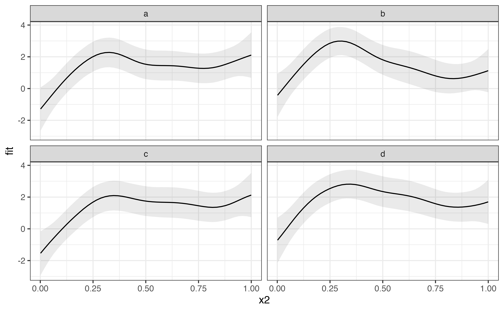

Get model predictions and plot them with ggplot2
Stefano Coretta
2021-01-29
Source:vignettes/predict-gam.Rmd
predict-gam.RmdWhile plot_smooths() offers a streamlined way of plotting predicted smooths from a GAM model (see vignette("plot-smooths", package = "tidymv")), it is too constrained for other more complex cases.
The most general solution is to get the predicted values of the outcome variable according to all the combinations of terms in the model and use this dataframe for plotting. This method grants the user maximum control over what can be plotted and how to transform the data (if necessary).
I will illustrate how to use the function predict_gam() to create a prediction dataframe and how this dataframe can be used for plotting different cases.
Let’s load the necessary packages.
Smooths
First of all let’s generate some simulated data and create a GAM model with a factor by variable.
library(mgcv)
set.seed(10)
data <- gamSim(4, 400)
#> Factor `by' variable example
model <- gam(
y ~
fac +
s(x2, by = fac),
data = data
)
summary(model)
#>
#> Family: gaussian
#> Link function: identity
#>
#> Formula:
#> y ~ fac + s(x2, by = fac)
#>
#> Parametric coefficients:
#> Estimate Std. Error t value Pr(>|t|)
#> (Intercept) 1.2219 0.1634 7.478 5.17e-13 ***
#> fac2 -1.7395 0.2376 -7.322 1.44e-12 ***
#> fac3 2.2505 0.2301 9.779 < 2e-16 ***
#> ---
#> Signif. codes: 0 '***' 0.001 '**' 0.01 '*' 0.05 '.' 0.1 ' ' 1
#>
#> Approximate significance of smooth terms:
#> edf Ref.df F p-value
#> s(x2):fac1 2.750 3.426 3.749 0.00763 **
#> s(x2):fac2 2.738 3.403 41.046 < 2e-16 ***
#> s(x2):fac3 7.140 8.195 35.734 < 2e-16 ***
#> ---
#> Signif. codes: 0 '***' 0.001 '**' 0.01 '*' 0.05 '.' 0.1 ' ' 1
#>
#> R-sq.(adj) = 0.643 Deviance explained = 65.6%
#> GCV = 3.6879 Scale est. = 3.5438 n = 400We can extract the predicted values with predict_gam(). The predicted values of the outcome variable are in the column fit, while fit.se reports the standard error of the predicted values.
model_p <- predict_gam(model)
model_p
#> # A tibble: 150 x 4
#> fac x2 fit se.fit
#> <fct> <dbl> <dbl> <dbl>
#> 1 1 0.00134 1.02 0.546
#> 2 2 0.00134 -2.80 0.508
#> 3 3 0.00134 -1.70 0.801
#> 4 1 0.0217 1.04 0.487
#> 5 2 0.0217 -2.72 0.454
#> 6 3 0.0217 -0.616 0.612
#> 7 1 0.0421 1.06 0.435
#> 8 2 0.0421 -2.65 0.407
#> 9 3 0.0421 0.477 0.484
#> 10 1 0.0625 1.08 0.390
#> # … with 140 more rowsNow plotting can be done with ggplot2. The convenience function geom_smooth_ci() can be used to plot the predicted smooths with confidence intervals.
model_p %>%
ggplot(aes(x2, fit)) +
geom_smooth_ci(fac)Surface smooths
Now let’s plot a model that has a tensor product interaction term (ti()).
model_2 <- gam(
y ~
s(x2) +
s(f1) +
ti(x2, f1),
data = data
)
summary(model_2)
#>
#> Family: gaussian
#> Link function: identity
#>
#> Formula:
#> y ~ s(x2) + s(f1) + ti(x2, f1)
#>
#> Parametric coefficients:
#> Estimate Std. Error t value Pr(>|t|)
#> (Intercept) 1.4766 0.1527 9.67 <2e-16 ***
#> ---
#> Signif. codes: 0 '***' 0.001 '**' 0.01 '*' 0.05 '.' 0.1 ' ' 1
#>
#> Approximate significance of smooth terms:
#> edf Ref.df F p-value
#> s(x2) 1.477 1.871 1.005 0.36103
#> s(f1) 1.000 1.000 1.279 0.25870
#> ti(x2,f1) 1.000 1.000 7.421 0.00673 **
#> ---
#> Signif. codes: 0 '***' 0.001 '**' 0.01 '*' 0.05 '.' 0.1 ' ' 1
#>
#> R-sq.(adj) = 0.0662 Deviance explained = 7.43%
#> GCV = 9.3692 Scale est. = 9.2644 n = 400Let’s get the prediction dataframe and produce a contour plot. We can adjust labels and aesthetics using the usual ggplot2 methods.
model_2_p <- predict_gam(model_2)
model_2_p
#> # A tibble: 2,500 x 4
#> x2 f1 fit se.fit
#> <dbl> <dbl> <dbl> <dbl>
#> 1 0.00134 0.00125 -1.35 0.585
#> 2 0.0217 0.00125 -1.27 0.574
#> 3 0.0421 0.00125 -1.19 0.587
#> 4 0.0625 0.00125 -1.12 0.620
#> 5 0.0829 0.00125 -1.04 0.670
#> 6 0.103 0.00125 -0.962 0.729
#> 7 0.124 0.00125 -0.887 0.795
#> 8 0.144 0.00125 -0.813 0.864
#> 9 0.164 0.00125 -0.740 0.933
#> 10 0.185 0.00125 -0.668 1.00
#> # … with 2,490 more rows
model_2_p %>%
ggplot(aes(x2, f1, z = fit)) +
geom_raster(aes(fill = fit)) +
geom_contour(colour = "white") +
scale_fill_continuous(name = "y") +
theme_minimal() +
theme(legend.position = "top")Smooths at specified values of a continuous predictor
To plot the smooths across a few values of a continuous predictor, we can use the values argument in predict_gam().
predict_gam(model_2, values = list(f1 = c(0.5, 1, 1.5))) %>%
ggplot(aes(x2, fit)) +
geom_smooth_ci(f1)Exclude terms (like random effects)
It is possible to exclude terms when predicting values by means of the exclude_terms argument. This can be useful when there are random effects, like in the following model.
data_re <- data %>%
mutate(rand = rep(letters[1:4], each = 100), rand = as.factor(rand))
model_3 <- gam(
y ~
s(x2) +
s(x2, rand, bs = "fs", m = 1),
data = data_re
)
#> Warning in gam.side(sm, X, tol = .Machine$double.eps^0.5): model has repeated 1-
#> d smooths of same variable.
summary(model_3)
#>
#> Family: gaussian
#> Link function: identity
#>
#> Formula:
#> y ~ s(x2) + s(x2, rand, bs = "fs", m = 1)
#>
#> Parametric coefficients:
#> Estimate Std. Error t value Pr(>|t|)
#> (Intercept) 1.5043 0.2436 6.175 1.67e-09 ***
#> ---
#> Signif. codes: 0 '***' 0.001 '**' 0.01 '*' 0.05 '.' 0.1 ' ' 1
#>
#> Approximate significance of smooth terms:
#> edf Ref.df F p-value
#> s(x2) 4.169 5.079 4.426 0.000641 ***
#> s(x2,rand) 5.755 35.000 0.327 0.024554 *
#> ---
#> Signif. codes: 0 '***' 0.001 '**' 0.01 '*' 0.05 '.' 0.1 ' ' 1
#>
#> R-sq.(adj) = 0.0914 Deviance explained = 11.4%
#> GCV = 9.2673 Scale est. = 9.0142 n = 400exclude_terms takes a character vector of term names, as they appear in the output of summary() (rather than as they are specified in the model formula). For example, to remove the term s(x2, fac, bs = "fs", m = 1), "s(x2,fac)" should be used since this is how the summary output reports this term. The output still contains the excluded columns. The predicted values of the outcome variable are not affected by the value the excluded terms (the predicted values are repeated for each value of the excluded terms). In other words, the coefficients for the excluded terms are set to 0 when predicting. We can filter the predicted dataset to get unique predicted values by choosing any value or level of the excluded terms.\footnote{Alternatively, we can use splice(): group_by(a) %>% splice(1). See ?splice.}
predict_gam(model_3, exclude_terms = "s(x2,rand)") %>%
filter(rand == "a") %>%
ggplot(aes(x2, fit)) +
geom_smooth_ci()
To speed up the calculation of the predictions when excluding terms, it is helpful to select a single value for the unnecessary terms using the values argument, rather than filtering with filter(). As with filter(), any value of the excluded variable can be used. If the value is NULL, the first value/level of the term is automatically selected (in the example below, values = list(rand = NULL) and values = list(rand = "a") would be equivalent).
predict_gam(model_3, exclude_terms = "s(x2,rand)", values = list(rand = NULL)) %>%
ggplot(aes(x2, fit)) +
geom_smooth_ci()Of course, it is possible to plot the predicted values of random effects if we wish to do so. In the following example, the random effect rand is not excluded when predicting, and it is used to facet the plot.
predict_gam(model_3) %>%
ggplot(aes(x2, fit)) +
geom_smooth_ci() +
facet_wrap(~rand)